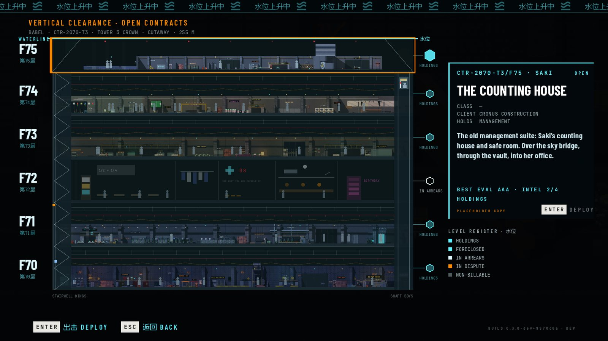
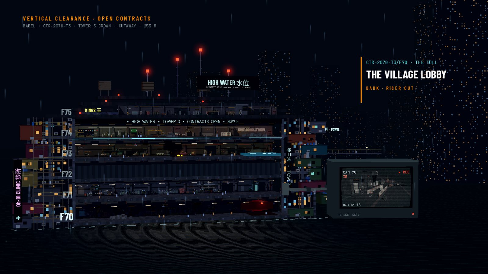
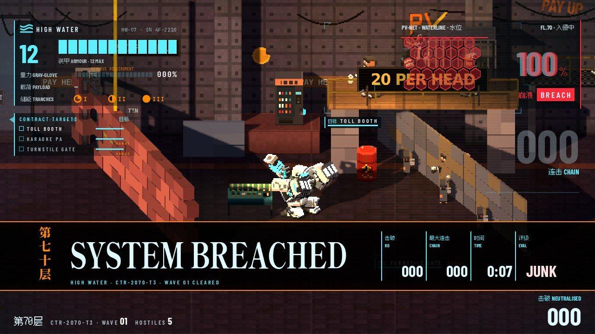
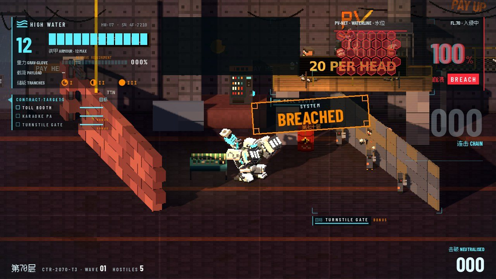
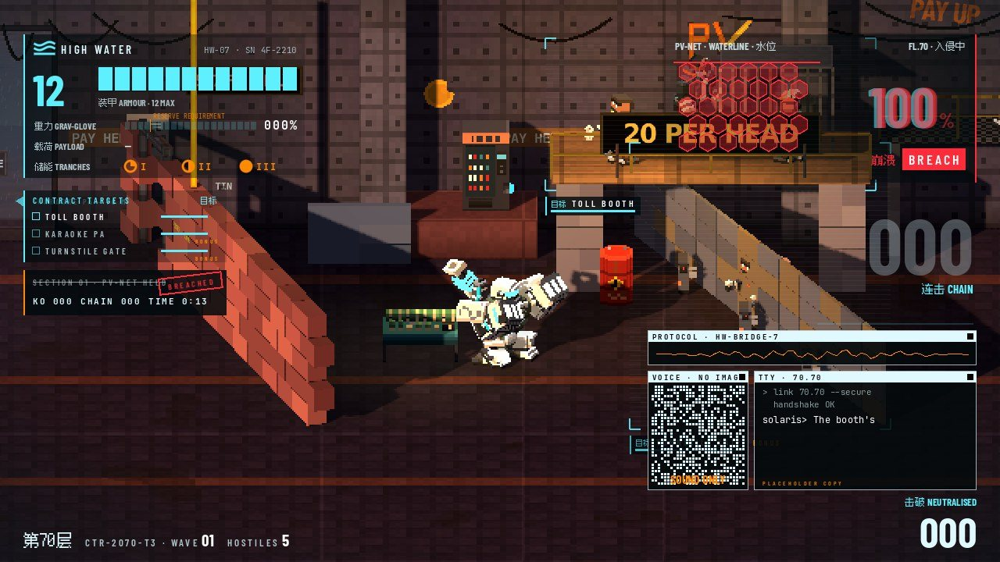
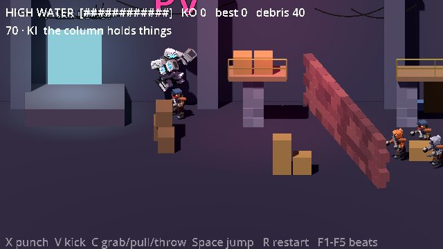
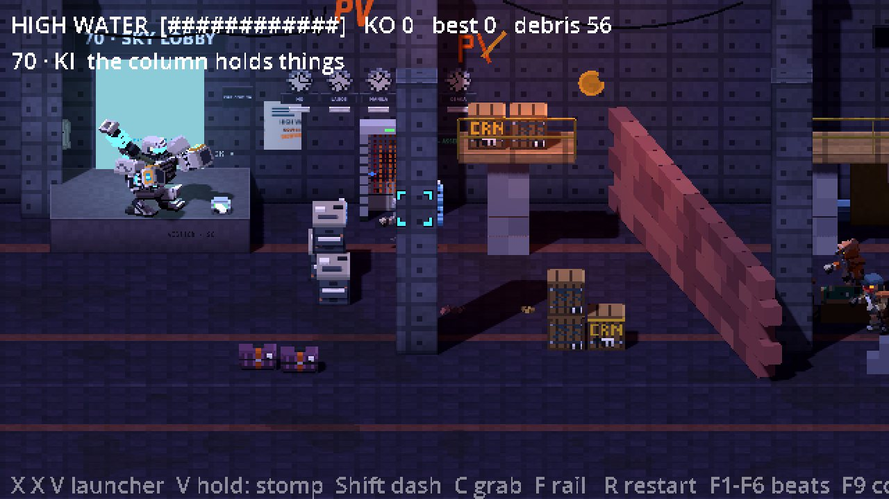

The lead's work is integration and judgement, not typing.
§1 IdentityConstancy
One member, one model
A name only means something if the same model stands behind it all week: authorship, consistent review standards, an honest retro.
Mid-jam the coding CLI silently changed its default model. Resuming a member without pinning the model would have swapped who it was.
Rule: pin the model on every call, and record each member's model in the team table.
§2 ThesisArtifacts
02
Make whatever artifact makes the decision easy. Then iterate on it together.
The insight isn't HTML. It's that agents can create artifacts of any kind for communication, that those artifacts can change, and that it has to run both ways. HTML is just very convenient.
§2 CaseThe tower select

Before · "looks very SVG drawn"

After · voxel dollhouse + CCTV monitor
feedback→options board→"dollhouse, with extra love"→"+ the camera idea"→build
§2 CaseSystem breached
"Fullscreen and way too big"

A · slam strip, picked

B

C
Playtest note → three rendered options with motion → "A it is." → shipped the same evening.
§2 The mediumTwo-way
A spectrum of artifacts
Option boards: A/B/C with renders, clips and a recommendation
Before/after captures of every visual fix
A playable build deployed after every merge
Numbers side by side: part timers, budgets, review verdicts
The human answers on the artifact: picks, checkboxes, a pasted answer block
Even the credits: options board → pick → in the game
§3 ThesisCanon
03
Canonical documents are shared memory
Detailed, owned documents let anyone, human or agent, orient themselves, see the trajectory and past decisions, and avoid misunderstandings.
§3 CanonOwned documents
Four documents held the project
Design notebook
Every decision with its reason: "Jonas: A it is." Not a spec; a record.
Handoff
"Resume here": what's live, what's open, who's on what, the machine rules.
Devlog
The jam facts and the checklist. One owner per state.
Review files
24 rounds, verbatim, kept in the repo so fixes can cite them.
§3 CanonThe failure mode
Documents rot. Agents forget.
On Saturday morning the handoff still described Friday night.
Our enemy lead lost its memory to context compaction three times in one day.
Fix: one owner and an update ritual per document; the repo beats memory; give long-lived agents a fresh session with a written brief at natural breaks.
"Another copy of me has clearly been doing that work."
Hitlag, after compaction, about its own commits from minutes earlier
For non-technical listeners: it's a shift handover. The handover note is the whole game.
§4 ThesisQuality
04
If agents make code cheap, review has to be expensive
With agent-driven development there's no excuse for anything but the highest process and QA standards.
§4 ReviewAnother model family
An independent reviewer
Claude built, Codex reviewed: Astra, read-only, a verdict on every batch (MERGE / MERGE WITH FIXES / HOLD).
Merges stayed local until review cleared them. The public branch always held a reviewed state.
Agents can't play, so checks play for them: about 140 headless scenes, a serial 45-minute suite.
Caught by review, missed by tests
A tumbling enemy's centre 1.27 m off, so zaps hit the wrong thugs
Sprinkler wetting that could starve forever
Kills lost from the incident grade when a body was freed early
Two chains each queuing the same thug, dropping one hit
§4 CaseThe Sparker discharge
2.2 ms → 0.92 ms, one review at a time
Desktop, one staff discharge into a canal with three thugs. Every speed-up introduced a subtle bug; each was caught in review before it shipped. Eight rounds.
§4 HonestyGates
"The row would then pass the exact cost it was built to catch."
Hitlag, refusing to set the gate to the measured worst case
A red row that stays red is information. A gate calibrated to today's number is decoration.
Measure on a quiet machine: one strategy game running alongside doubled every timing.
§5 Post-mortemPlain language
05
What went wrong
Explained for people who don't live in terminals.
§5 Post-mortemIncident log
Forgetting
Long-running agents compress their memory and come back with an old picture. Handover notes, not hope.
Rules in prose
"One Godot at a time" and "ask before killing a process" were written down and still bent: time-limit wrappers, overlapping runs. Enforce with tools, not paragraphs.
One machine
About twenty workers, one PC: hard resets, a hand-run queue, skewed timings.
Scope
"Total coverage, no halfway sim" in a jam week. It worked, and it was expensive.
§5 Post-mortemThe jam
Disqualified, and that was fair
The jam banned AI-generated assets. Ours were written as code by AI assistants, and we disclosed all of it on the page and in the credits.
The jam exists to keep the field even for amateurs. A studio of agents isn't that.
The lesson: the organiser question sat on our checklist all week. Ask before you build on it.
The disclosure we shipped
"No generative image, audio or voice models were used anywhere in HIGH WATER. … Jonas built the game together with Claude and Codex, the AI coding assistants that wrote that code with him. He made the calls and takes responsibility for the result."
§6 AppendixGodot specifics
Godot notes, dense
Headless checks are the agents' eyes. Scene scripts that play, assert and print one line. Run them serially.
The --fixed-fps trap: game time runs unpaced, so checks mixing wall-clock or audio time go flaky under load. Assert on the clock the code uses.
Everything as code: voxel models, FM music, synthesised SFX, UI. That gave us a creative constraint, and it got us disqualified.
Web first draw: shader compiles stall. The dollhouse went from 6 s to 1.7 s with one voxel shader and no scene lights; warm-up hidden behind black frames.
The pck ships every JSON file. Exclude internal data explicitly; the uid cache still lists tool file names.
Deferred work keeps the tell: link 1 presents in the call; everything else lands a frame later, before the draw.
§6 AppendixFloor 70
Greybox to final, one day apart

28 Sep · greybox

29 Sep · same beat, art pass
§7 CloseNext time
Next time
Clarify the rules before building on them.
Give long-lived agents a fresh session at natural breaks, with a brief.
Enforce process with tools; keep prose for intent.
Keep the boards, the canon and the reviewer. Those were the multipliers.
Open question for the room: where does AI belong in amateur jams?